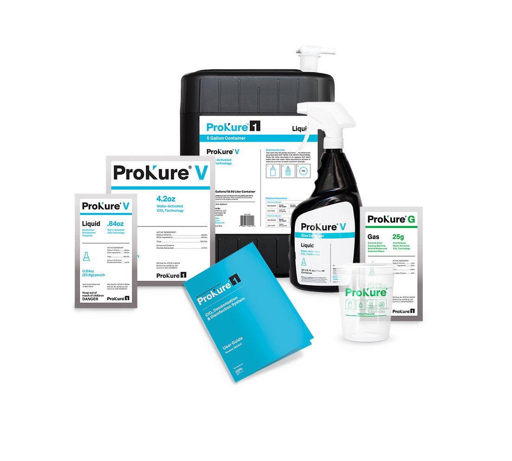

Bay State Environmental Group provides OSHA-certified disinfecting services using ProKure Chlorine Dioxide Water-Activated Technology.
Using the Latest Technology from ProKure Disinfectants and Victory Electrostatic Sprayers
|  |
When applied to non-porous surfaces (stainless steel, glass, vinyl, plastic, PVC), ProKure ClO2 technology provides is an effective:
- Disinfectant
- Sanitizer
- Deoderizer
- Fungicide
- General Pupose Anti-Microbial and Surface Cleaner
Bay State Enviuronmental Group’s OSHA-certified operators have been trained to use the latest electrostatic dispersion equipment for effective disinfection of:
- Commercial Buldings
- Commercial Kitchens
- Day Care Centers
- First Responder Facilities
- Gyms and Locker Rooms
- Hotels/Motels
- Medical Laboratories
- Schools
- Vehicles
- Homes
Environmental Protection Agency Pesticide Establishment Registration
- EPA Registration No. 87508-3-89334
- EPA Establishment No. 62788-AL-001